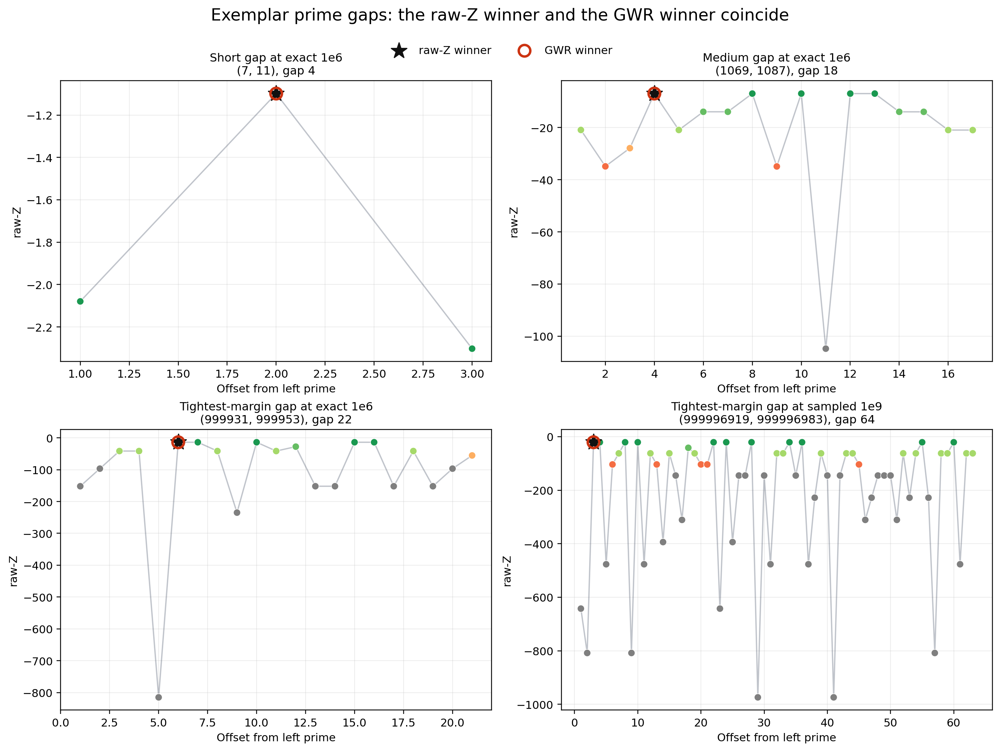

legacy
GWR story: exemplar gap profiles
Legacy committed figure from research/02-gwr-dni/story. Shows raw landscape / selected integer placement on exemplar gaps used in the GWR story pack.

- Regime
- story surface documented in research/02-gwr-dni/story/story/plot_generation_plan.md (exact 1e6 + even-window 1e9 story surfaces)
- Claim language
- weak
- Reproduce
visualizations/library/.venv/bin/python visualizations/library/entries/gwr-figure-01-exemplar-gap-profiles/demo.py- Chapter refs
research/02-gwr-dni/story/story/PROOF.md
- Tags
Observable object
Individual prime gaps drawn as landscapes where the selected integer sits among the interior divisor structure.
Mechanism
Inside a nonempty gap the leftmost minimum-divisor integer is the GWR witness. Story figure 01 makes that placement visible on short and medium exemplars.
Provenance
Copied from research/02-gwr-dni/story/story/plots/figure_01_exemplar_gap_profiles.png (legacy wrap).
Status and limits
- Status: legacy story figure with chapter-local surfaces.
- Not re-derived in this library pass; regenerate via the story plot script if the chapter assets change.
- Theorem authority remains
PROOF.md, not the PNG.